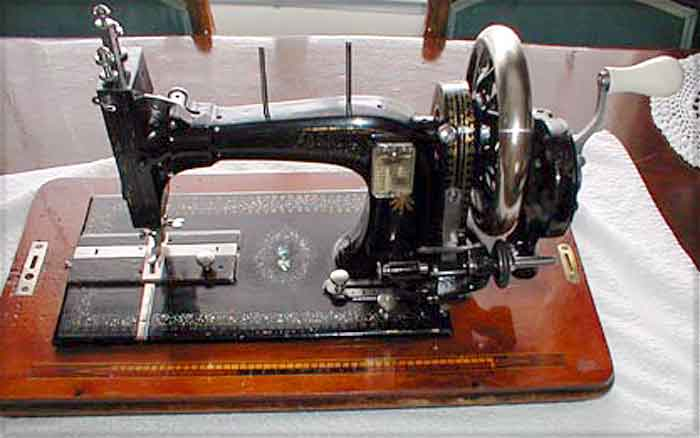
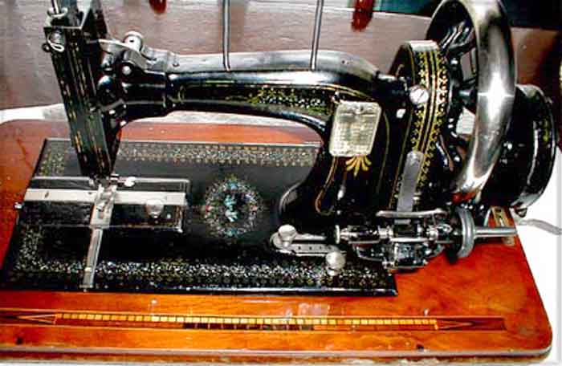
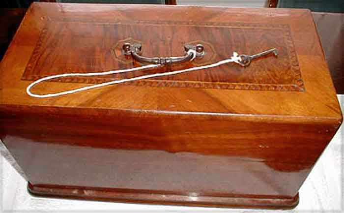

Adam Opel, Rüsselsheim
Model: ?
Serial # ?
Front View / Close-up / Cover
Pictures courtesy of Jim Houlihan
Front View

Close-up

Cover

©
Alan Quinn 2002 All Rights Reserved
This page may not be reproduced or distributed in part or in whole without the prior written permission of the copyright owner